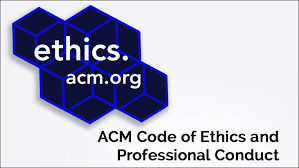
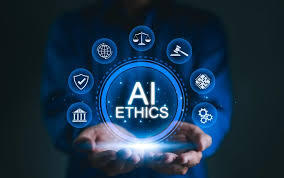

Durante los primeros días de la computación, pioneros como Alan Turing y otros reflexionan sobre los límites de las máquinas, el control humano y las implicaciones de los avances tecnológicos.
La **ACM** (Association for Computing Machinery) y otras instituciones comienzan a proponer códigos de ética, destacando la responsabilidad profesional en el desarrollo y uso de la computación.

En la década de los 70, con la expansión de las computadoras en la administración pública y empresas, emergen preocupaciones sobre la privacidad, el acceso no autorizado y el uso indebido de datos.
Con la llegada de la computación en red y el uso masivo de bases de datos, surgen dilemas éticos sobre el control de la información personal y su explotación sin el consentimiento de los usuarios.
La expansión de Internet plantea grandes desafíos éticos sobre la **privacidad**, **seguridad**, y el **uso de la información**. En 1992 se crea el primer código de ética sobre **privacidad en internet**.
El auge de la **inteligencia artificial** y los algoritmos plantea nuevos dilemas éticos, como la transparencia en la toma de decisiones y el sesgo algorítmico.
Con el aumento de la recopilación de datos y la vigilancia en línea, la ética en la ingeniería informática se ve afectada por la necesidad de proteger la **privacidad** y el **derecho a la autonomía** de las personas.
El avance en **IA** y la automatización de trabajos presentan desafíos éticos sobre **empleo**, **responsabilidad** y el **uso justo de las tecnologías**. Se aboga por una IA responsable y transparente.
A medida que la **IA** continúa desarrollándose, se están implementando regulaciones a nivel global para abordar cuestiones éticas, como la **justicia**, la **no discriminación** y la **transparencia** en los sistemas automatizados.
